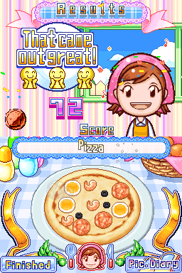
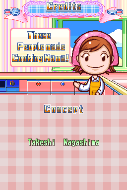
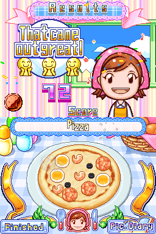
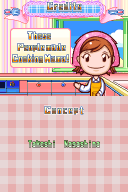

Cooking Mama 2: Dinner With Friends

Other on 2023-04-28
3 / 5
Release Date: Nov 13, 2007
Meta Score: 70
Screenshots
 



Notes
I had to include at least one Cooking Mama game, I believe this one had the highest rating. The DS was in the high point of Nintendo trying to appeal to casual/non-traditional audiences with their consoles (before mobile gaming ate that market completely). I left a few of the most iconic titles in.
Cooking Mama is essentially a string of little minigames you do in order to cook vairous dishes. It has a few different modes which give you slightly different contexts to cook in. It's fun but fairly shallow.
The game doesn't really have a "story mode" or end so I've filled it under "Other". Credits available from the options menu though.